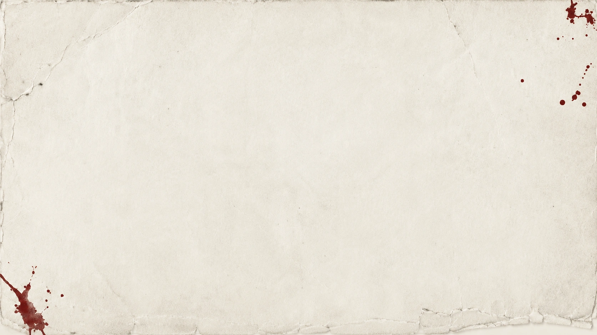

#1 Spotify Polska
Kryminatorium — najczęściej słuchany podcast roku w Polsce.
Najważniejsze wyróżnienia, rankingi i kamienie milowe — pokazane chronologicznie, zgodnie z materiałami Marcina.
Kryminatorium — najczęściej słuchany podcast roku w Polsce.
Kryminatorium ponownie na pierwszym miejscu.
Jedno z najważniejszych branżowych wyróżnień projektu.
Kryminatorium po raz kolejny liderem rankingu.
„Zbrodnia obok Ciebie” przekroczyła 10 tys. sprzedanych egzemplarzy w pierwszych trzech miesiącach od premiery.
Podcast „Odwilż”.
Kryminatorium.
Kolejna statuetka dla projektu audio.
Wyróżnienie dla produkcji audio.
Kryminatorium.
